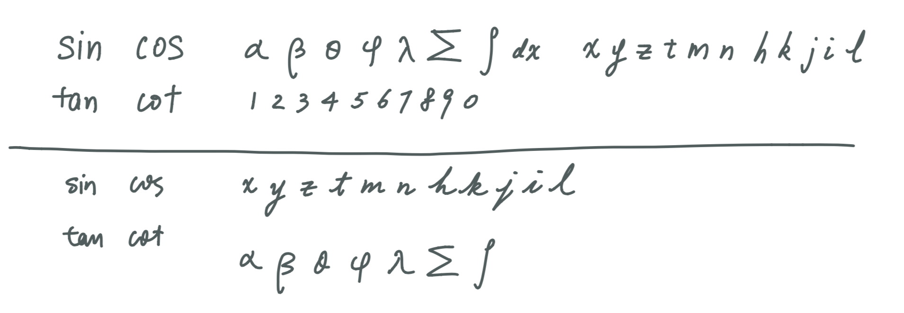
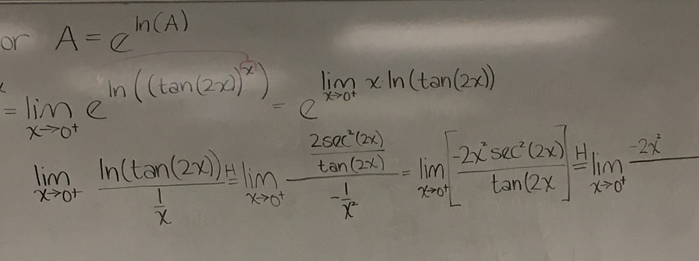
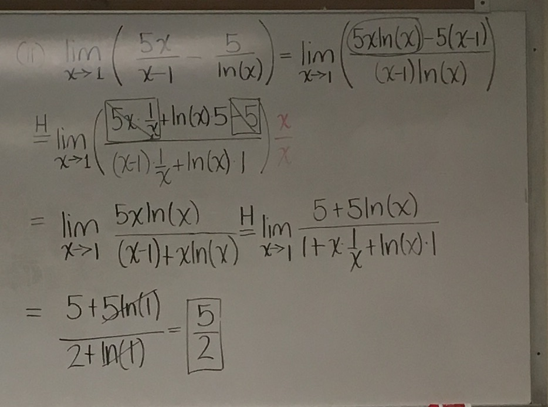
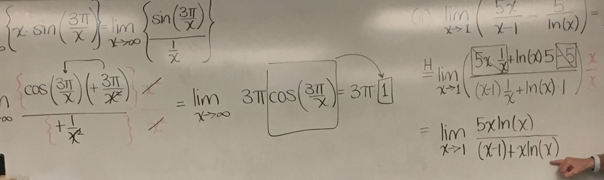
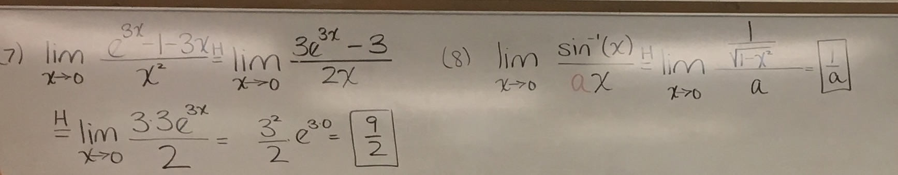
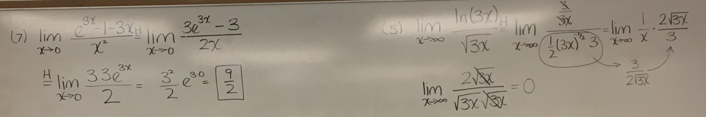
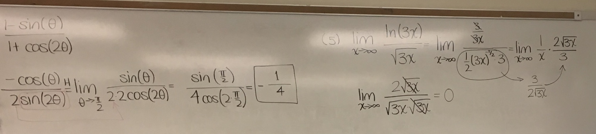
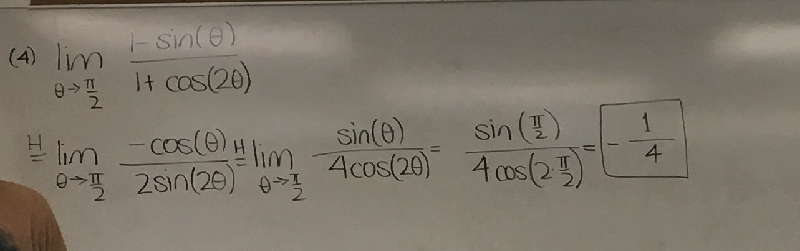

Mathematics Penmanship
My Calculus professor has a really nice white board writing, his letters and symbols are big and distinctive. Really nice to read overall 1. If you look at the examples, you will find that they are not necessarily beautiful, but comfortable to read.
After taking his class I try to copy his writing on to paper. It is successful except one issue: when he was writing on the board, he took his time, but sometimes when I need to spill out equations line after line on a class, the quality goes down quickly. I don't really have a solution other than to only write in the fast way when I have to, e.g., when I try to catch up.
Some comparison between “slow and nice” and “fast and raw”:

The rule of thumb that I come up with:
- make letters big and clear
- leave a good among of space between everything
- prefer print over cursive
- take your time (when possible)
Footnotes:
His board writings, notice his elaborate “a”, I don't do that.






